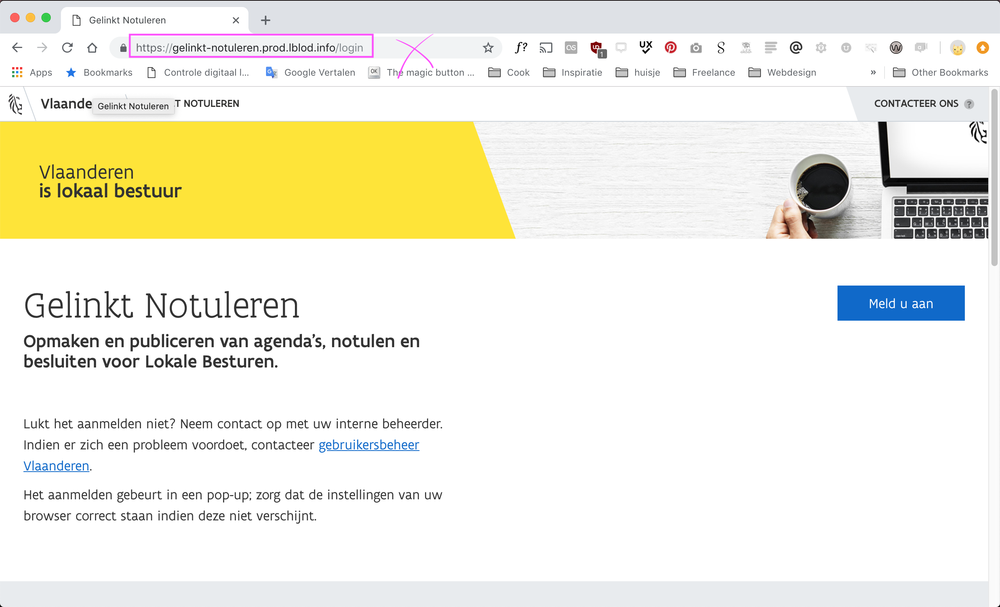
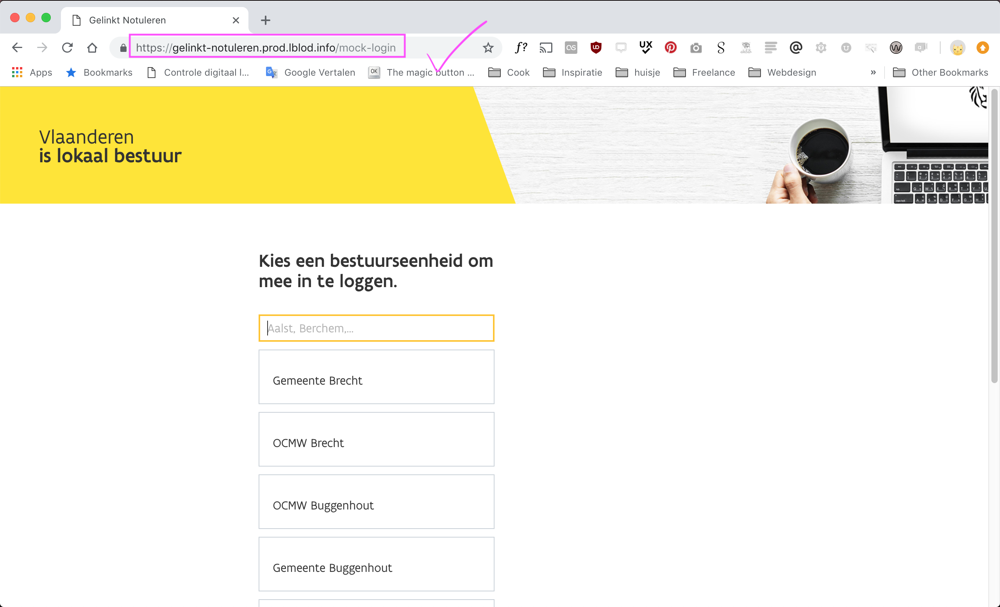
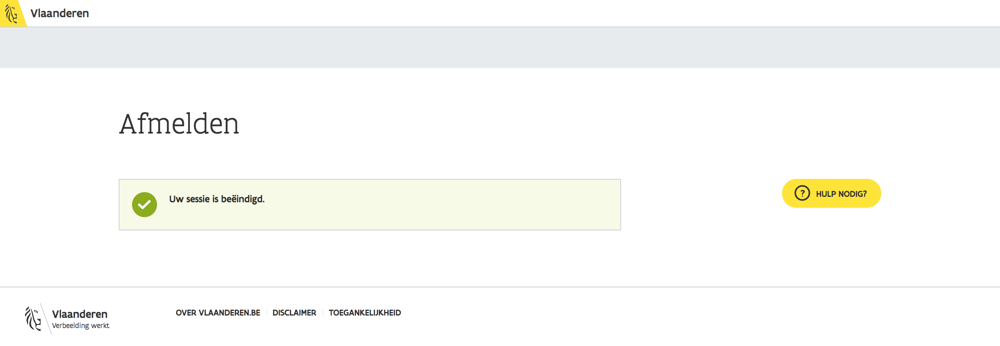
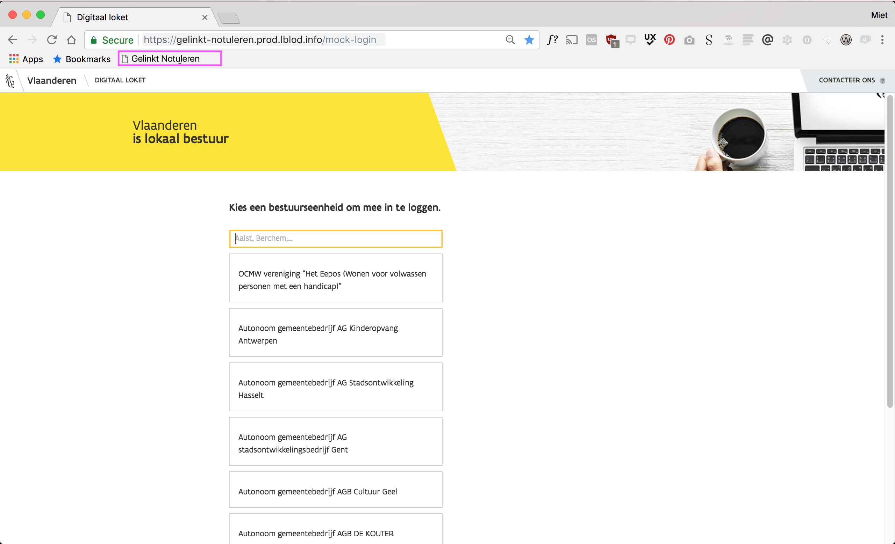

Browser: Chrome of Firefox
U werkt best met Chrome, Firefox of Safari (native geïnstalleerd op mac).
Bedankt voor uw toewijding en tijd om lokale besturen te helpen, en de inhoud bij te sturen. In deze handleiding vindt u bijkomende informatie voor het service desk team.
Niet wat u zocht? Ga naar uitgebreide handleiding voor Gelinkt Notuleren voor Lokale Besturen.
Deze handleiding is nog in ontwikkeling!.
Staan er fouten in deze handleiding? Neem contact op met support+gelinkt-notuleren@redpencil.io.
Denk even na voor u print! De bomen zullen u dankbaar zijn.
Om aan te melden als een echt bestuur, ga naar loket.miet.be/handleiding.
U werkt best met Chrome, Firefox of Safari (native geïnstalleerd op mac).
De applicatie staat voorlopig op https://gelinkt-notuleren.prod.lblod.info. Bij de launch van de applicatie zal deze op https://gelinkt-notuleren.vlaanderen.be staan.
U komt nu terecht op de login pagina voor besturen (https://gelinkt-notuleren.prod.lblod.info/login). Voor het service desk team is er echter een aparte pagina voorzien: pas de link in uw browser aan naar https://gelinkt-notuleren.prod.lblod.info/mock-login. We raden u aan om deze link in uw bladwijzerbalk te stoppen, zodat u eenvoudig kan switchen van bestuur indien nodig!
 U ziet een zoekveld op de pagina, waar u kan zoeken op de naam van het bestuur. Type bestuur zal niet werken.
In dit geval hebben we op de naam Antwerpen gezocht. Deze zoekterm levert twee pagina's met de volgende zoektermen op:
U kan er voor kiezen om ook op de specifieke naam van het bedrijf te zoeken.
Klik op de naam van het bestuur om u aan te melden als dat bestuur.
Eens u aangemeld bent, krijgt u een overzicht van al de documenten van dat bestuur.

Via de knop Meld u af kan u uit het huidige bestuur gaan.
U wordt naar deze pagina doorverwezen:
Navigeer weer naar https://gelinkt-notuleren.prod.lblod.info/mock-login om u met een ander bestuur aan te melden. De pop-up die om credentials vraagt zou niet moeten verschijnen, zorg dat u aanvinkt dat uw browser de credentials onthoudt.
Staan er fouten in deze handleiding? Neem contact op met support+gelinkt-notuleren@redpencil.io.